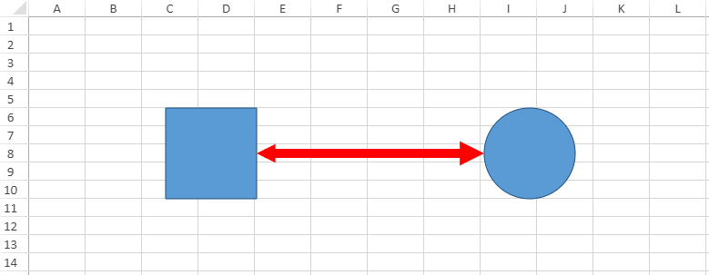

In This Topic
The connector shapes can be used to connect two or more shapes using distinct lines, arrows and connection points. SpreadJS provides extensive support for adding and customizing connector shapes in the worksheet.
You can add connector shapes in the worksheets using different kind of arrows including the normal arrow (no side is pointed), basic arrow (with both sides pointed), the open arrow, the stealth arrow, the oval arrow and the diamond arrow.
Basically, the connector shapes are of the following two types:
- Straight connector shape - Refers to a shape that connects two or more shapes using straight line connectors.
- Elbow connector shape - Refers to a shape that connects two or more shapes using angled connectors .
Shared below is a screenshot that depicts a connector shape connecting a rectangle and a circle with an arrow.

Using Code
This example shows how to add a connector shape in the worksheet.
| JavaScript |
Copy Code
|
|
// Adding the connector shape to the worksheet
window.onload = function ()
{
var spread = new GC.Spread.Sheets.Workbook(document.getElementById("ss"));
var sheet = spread.getActiveSheet();
//Add two shapes between which a connector shape will be added
var shape1 = sheet.shapes.add("myShape1", GC.Spread.Sheets.Shapes.AutoShapeType.rectangle, 150, 100, 100, 100);
var shape2 = sheet.shapes.add("myShape2", GC.Spread.Sheets.Shapes.AutoShapeType.oval, 700, 100, 100, 100);
// Add a connector shape to connect the two shapes defined above
var connectorShape = sheet.shapes.addConnector("myConnectorShape", GC.Spread.Sheets.Shapes.ConnectorType.straight, 250, 150, 700, 150);
// Setting connector shape style
var oldStyle = connectorShape.style();
oldStyle.line.color = 'red';
oldStyle.line.lineStyle = GC.Spread.Sheets.Shapes.PresetLineDashStyle.dot;
oldStyle.line.width = 10;
oldStyle.line.capType = GC.Spread.Sheets.Shapes.LineCapStyle.square;
oldStyle.line.joinType = GC.Spread.Sheets.Shapes.LineJoinStyle.miter;
oldStyle.line.beginArrowheadStyle = GC.Spread.Sheets.Shapes.ArrowheadStyle.triangle;
oldStyle.line.beginArrowheadWidth = GC.Spread.Sheets.Shapes.ArrowheadWidth.narrow;
oldStyle.line.beginArrowheadLength = GC.Spread.Sheets.Shapes.ArrowheadLength.short;
oldStyle.line.endArrowheadStyle = GC.Spread.Sheets.Shapes.ArrowheadStyle.triangle;
oldStyle.line.endArrowheadWidth = GC.Spread.Sheets.Shapes.ArrowheadWidth.medium;
oldStyle.line.endArrowheadLength = GC.Spread.Sheets.Shapes.ArrowheadLength.medium;
connectorShape.style(oldStyle);
// Set startConnector for the connector shape
var startConnector = connectorShape.startConnector();
connectorShape.startConnector({ name: shape1.name(), index: 3 });
// Set endConnector for the connector shape
var endConnector = connectorShape.endConnector();
connectorShape.endConnector({ name: shape2.name(), index: 2 });
};
|
Note: SpreadJS doesn't support the following scenarios while integrating connector shapes:
- The connector shapes of curve and freedom type are not supported. Also, the layout of connector shapes may appear different if compared to Excel. While connecting shapes using the BentArrow, Excel may show the area covered with clipped results but SpreadJS will keep it as fill.
- Resizing some of the shapes like : Balloon, RectangularCallout, OvalCallout, CloudCallout, etc. may give clipped results. Also, shapes like Cube and DiagonalStrip etc. may give unexpected results when the points are adjusted to the maximum value.